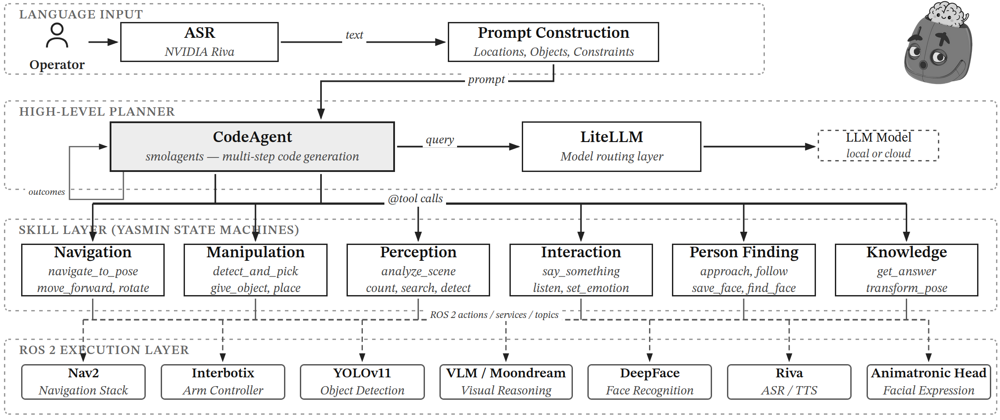

Center for Computational Sciences (C3) · Universidade Federal do Rio Grande – FURG, Brazil
We present a modular architecture for general purpose domestic robots that confines non-deterministic reasoning to a large language model (LLM) acting as a code-generating planner, while delegating execution, monitoring, and recovery to a deterministic skill layer built on ROS 2 state machines. This approach requires no fine-tuning or domain-specific training data, relying entirely on the reasoning capabilities of foundation models guided by structured prompting. We evaluate the architecture on a 100-command benchmark derived from the General Purpose Service Robot (GPSR) task, comparing eight foundation models ranging from 3B to 70B parameters as well as cloud-hosted APIs. The best model achieves a 95.0% task completion rate, while an ablation study shows that code generation consistently outperforms structured tool calling across all model scales. We further validate the system through deployments in the RoboCup@Home GPSR task, where it successfully executed complex, multi-step household instructions.

Fig. 1. System architecture. A natural-language command is transcribed by the ASR module and augmented with environment context in the prompt construction stage. The BORISAgent decomposes the task into a sequence of @tool calls, each of which executes a YASMIN state machine that interfaces with the robot's actuators and sensors through ROS2.
Fig. 2. The BORIS robot platform (1.48m) featuring the SHARK mobile base, WidowX-200 arm, animatronic head, and onboard NVIDIA Jetson Orin AGX.
Task Score = % of tasks scoring ≥ 2 on a 4-point scale (greedy decoding, same prompt across all models).
Physical evaluation on the BORIS robot across 36 trials per model. Task Score is the percentage of trials scoring ≥ 2. Recovery counts trials where a tool failure was overcome to still achieve a passing score.
P = Planning · N = Navigation · V = Perception (VLM) · I = Interaction — unrecovered failure counts per category.
Fig. 3. Failure breakdown by error type for each model. Bar color encodes failure category. Gemini 3 Flash fails primarily due to VLM perception errors, whereas Qwen3-14B shows a broader spread dominated by missing verbal responses and VLM failures.
Real-world executions on the BORIS platform. Each video shows a complete end-to-end run from spoken instruction to physical action.
@inproceedings{dorneles2025borisagent, title = {A BORISAgent Architecture for LLM-Based Task Planning in Domestic Service Robots}, author = {Dorneles, Gabriel A. and Assis, Richard J. C. and Froes, Cris L. and Guerra, Rodrigo S. and Drews-Jr, Paulo L.J.}, booktitle = {RoboCup@Home / CBR 2025}, year = {2025}, url = {https://github.com/fbotathome} }